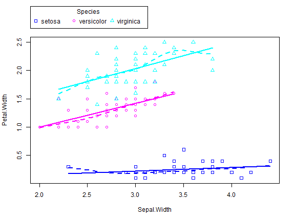
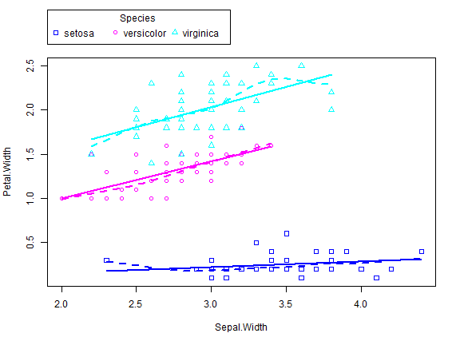

提點和參考
一般視窗作業系統的繪圖，會有一個抽象物件device在這個device上，有一個抽象物件canvas，和繪圖工具例如，水彩筆之類的抽象物件可以指定顏色，線條粗細等等。 在R中,對應上述作業系統的關鍵字.Devices(paired list)、.Device(長度為1)、dev.cur(目前的裝置active device)。這裡說的Device指的是視窗。在視窗裡面的畫布,就是R提供的繪圖函數輸出所在,例如plot(),hist()等等。
所以dev.new() 指的是開啟新視窗，dev.cur是目前視窗號碼,dev.prev()前一個視窗號碼。 而plot.new() 則是新增畫布。見練習
💡 怎樣快速查詢？
- ??draw
- ?plot : 參考其中的
plot.default查看圖形選項
函數plot()
可能最常用的繪圖函數就是plot(),而這個函數比較常用的選項有：
- type: 僅分佈點（預設）是否連線等基本模板。
- pch: mark
- cex: 放大倍數
- lty: 線條樣式line style
- lwd: 線條寬度line width
- col:
type
| type | description |
|---|---|
| p | points(*) |
| l | lines |
| o | 點+線 重合 |
| b, c | b(both的意思) 點+線,但是不重合(上面的o是重合) (如果是"c" 則沒有點) |
| s, S | stair steps |
| h | histogram-like vertical lines |
| n | does not produce any points or lines |
pch 資料點 符號
設定樣本點的符號,可以用 pch (point character).
pch 的值除了從 0 到 24 共25個符號外，還有 "*", "+", "o", "@", "#" 可以用。
pch=0 square
pch=1(*) circle
pch=2 triangle point up
pch=3 plus
pch=4 cross
pch=5 diamond
pch=6 triangle point down
pch=7 square cross
pch=8 star
pch=9 diamond plus
pch=10 circle plus
pch=11 triangles up and down
pch=12 square plus
pch=13 circle cross
pch=14 square and triangle down
pch=15 filled square blue
pch=16 filled circle blue
pch=17 filled triangle point up blue
pch=18 filled diamond blue
pch=19 solid circle blue
pch=20 bullet (smaller circle)
pch=21 filled circle red
pch=22 filled square red
pch=23 filled diamond red
pch=24 filled triangle point up red
pch=25 filled triangle point down red
cex 資料點大小
cex 用來放大文字或符號的倍數
因此,
cex = 1(*) is default size
cex = 1.5 is 150% of default size
cex = 0.5 is 50% of default size
[Note : cex.axis --> scales the axis
cex.lab ---> scales the label
cex.main --> scales main title
cex.sub ---> scales the subtitle ]
lty 線條型態
lty = 0 or lty = "blank"
lty = 1(*) or lty = "solid"
lty = 2 or lty = "dashed"
lty = 3 or lty = "dotted"
lty = 4 or lty = "dotdash"
lty = 5 or lty = "longdash"
lty = 6 or lty = "twodash"
顏色 col
col = "blue
col = "red"
col 後的值,可用colors() 來查詢顏色,會傳回 657 代表顏色的參數。或者也可以直接用16進位數字，例如
col = "#A9F3BB" ------> colour corresponding to Red=A9, Green=F3, Blue=BB in hexadecimal representation.

繪製向量 中的資料
x <- c(1,3,4,7,8,9)
y <- c(0,3,6,9,7,8)
plot(x,y,main='plot(x,y)')
繪製data.frame 中的資料
plot(mtcars$wt, mtcars$mpg)
plot(mpg~wt,data=mtcars) # 🏷👏和上面的圖沒什麼不同
abline(lm(mtcars$mpg~mtcars$wt)) #🏷👏這兩行疊在上面的圖形上
title("Regression of MPG on Weight")


plot()函數，新建視窗然後畫出 weight vs. miles per gallon.abline()不會開啟新視窗做圖，abline()的語法如下:abline(a = NULL, b = NULL, h = NULL, v = NULL, reg = NULL,coef = NULL, untf = FALSE, …)- 代表的意思是畫出一條直線
a+bx，其中a代表截距常數，b則是斜率常數。例如Y=2X+1，則對應的函數為abline(a=1,b=2)。- abline(h=3),水平線
- abline(v=2) 垂直
- 代表的意思是畫出一條直線
函數畫圖
x: -pi ~ 2*pi y: sin(x)
plot(sin, -pi, 2*pi)

line() 範例
require(stats) # for lowess, rpois, rnorm
summary(cars)
#> speed dist
#> Min. : 4.0 Min. : 2.00
#> 1st Qu.:12.0 1st Qu.: 26.00
#> Median :15.0 Median : 36.00
#> Mean :15.4 Mean : 42.98
#> 3rd Qu.:19.0 3rd Qu.: 56.00
#> Max. :25.0 Max. :120.00
plot(cars)
lines(lowess(cars)) #🏷疊上額外的線條

attach(cars)
plot(speed,dist,main="Stopping Distance", xlab="Speed", ylab="Distance", pch=21, bg=2, col=2)
lines(lowess(cars, f=.3),col =1)
lines(lowess(cars, f=.5),col =4)
lines(lowess(cars, f=.1),col =7)
scatterplot() 範例
範例 (參考)
if(!require("car"))
install.packages("car",repos="http://cran.us.r-project.org") # 🏷scatterplot 在這個套件中
#> 載入需要的套件：car
#> 載入需要的套件：carData
library(car)
scatterplot(wt ~ mpg, data = mtcars)
lines(lowess(mtcars$mpg,mtcars$wt),col ="red",lwd=3)

- 綠線: 回歸線
- 紅色虛線:the smoothed conditional spread
- 紅色實線:the non-parametric regression smooth
scatterplot(wt ~ mpg, data = mtcars,
smooth = FALSE, grid = FALSE, frame = FALSE)

library(car)
scatterplot(Sepal.Length~Sepal.Width|Species,data=iris,grid="FALSE",
boxplots="", pch=c(0,1,2))
scatterplot(Petal.Width~Sepal.Width|Species,data=iris,grid="FALSE",
boxplots="", pch=c(0,1,2))
 

Histograms
函數hist(x)：其中x是一個數字向量，
- 選項
freq=FALSE用來畫出 probability densities 而不是次數 frequencies. - 選項：
breaks= ##則是控制分成幾份。
Simple Histogram
hist(mtcars$mpg)

分成12份，顏色紅色。
hist(mtcars$mpg, breaks=12, col="red")

自行給定分割點
hist(mtcars$mpg, breaks=c(4,5,12,50), col="red")

Add a Normal Curve
Histograms can be a poor method for determining the shape of a distribution because it is so strongly affected by the number of bins used.
x <- mtcars$mpg
h<-hist(x, breaks=10, col="red", xlab="Miles Per Gallon", main="Histogram with Normal Curve")
xfit<-seq(min(x),max(x),length=40)
yfit<-dnorm(xfit,mean=mean(x),sd=sd(x))
yfit <- yfit*diff(h$mids[1:2])*length(x) #🏷length(X)是個數,不是長度
lines(xfit, yfit, col="blue", lwd=2)

$$ pdf = \frac{機率}{長度} =\frac{\frac{n}{N}}{bin \quad width} $$
所以
$$ n=pdf\times N \times (bin \quad width) $$
h
#> $breaks
#> [1] 10 12 14 16 18 20 22 24 26 28 30 32 34
#>
#> $counts
#> [1] 2 1 7 3 5 5 2 2 1 0 2 2
#>
#> $density
#> [1] 0.031250 0.015625 0.109375 0.046875 0.078125 0.078125 0.031250 0.031250
#> [9] 0.015625 0.000000 0.031250 0.031250
#>
#> $mids
#> [1] 11 13 15 17 19 21 23 25 27 29 31 33
#>
#> $xname
#> [1] "x"
#>
#> $equidist
#> [1] TRUE
#>
#> attr(,"class")
#> [1] "histogram"
Kernel Density Plot
核密度畫圖(Kernal density plots) 用來觀察一個變量，比較有有效率，指令如：plot(density(x)) 其中x 是一個數字向量。
d <- density(mtcars$mpg) # returns the density data
plot(d) # plots the results

Filled Density Plot
d <- density(mtcars$mpg)
plot(d, main="Kernel Density of Miles Per Gallon")
polygon(d, col="red", border="blue")